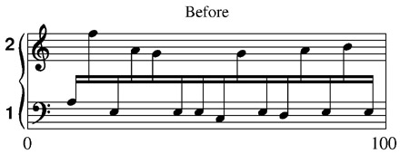
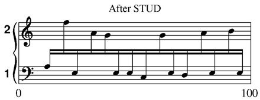
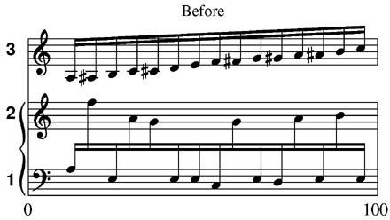

LINEUP and JUSTIFY
One of SCORE's most unique features is its justification routines. Modeled closely after the spacing methods plate engravers use, this
feature helps even the most inexperienced user to get excellent results consistently.
For most projects you create with SCORE, you will use the Lineup and Justify
command.
Type LJ or click on the LJ button in the Group Edit menu.
SCORE prompts: <Enter Lowest Staff# of system and how many staves in
system.>
You may type the appropriate numbers or use the mouse to indicate the desired staves. If the system has only one staff, just type the staff number, and press <ENTER>, or click on the staff. For a group of staves, draw a vertical line through the desired staves. To process all staves on the screen at once, type LJA (for lineup and justify all), or click on the LJ ALL button.
Note: LJ will not work if the staves have different numbers of
beats. See below for help if LJ does not function correctly.
What Does Lineup and Justify Do?
When you invoke the LJ command, SCORE searches through every staff in the file and, based on the P7 values in every Code 1 item (notes) and Code 2 item (rests), it calculates the correct space for each item. If a note has an accidental, or is offset (has a value in P10—see the
help for Code 1) SCORE will allow the appropriate amount of horizontal space. Every item which has spacing significance is allowed for. In tight situations, the Justification routine will actually "rob" space where it can graphically. If you
have a very high note followed by a low note, SCORE can actually steal a little space here, and in fact good engravers would make a deliberate effort to do the same.
In addition to spacing the system, the Lineup function searches through the line and makes sure that every beat is vertically aligned. Complex polyrhythms are accounted for, and spaced correctly (assuming that they are input correctly).
It is strongly recommended that you Lineup and Justify every file you create in SCORE for the highest quality results.
Lineup (LI)
In some situations, you may not wish to justify the line. The Lineup command may be used separately.
Lineup, by itself, will align every vertical beat correctly, but not justify the line. For Lineup to work correctly, every staff must have the same number of beats.
The Lineup routine bases its spacing on the methods engravers use. This means that the line is spaced proportionally. A half note will not receive twice the space of a quarter note; it is proportionally less. Generally,
this routine will account for most musical situations. When it does not, the group edit commands will allow you to quickly edit any anomalies.
Justify (J)
The Justify routine ensures there are no horizontal collisions in crowded lines. The accidentals, displaced chord notes, eighth note tails, etc. often require additional space. Justify subtracts proportionally from all the extra space on the line to provide space for these added elements.
Type J <ENTER>. SCORE prompts for the bottom staff number and the number of staves in the system (as before). When using the mouse to draw a box, Justify allows you to select a limited section for justification, as opposed to the whole staff. Justify, by itself, will not alter the alignment of vertical beats. Each line does not have to have the same number of beats for this to function.
Special Justification for Cross-stave Beaming: STUD
(STems Up/Down)
A justification problem sometimes occurs in keyboard music when the notes are beamed between the staves. SCORE's LJ command will space the notes correctly in this instance, but they will not look evenly spaced. The reason for this is that the eye examines the beam and sees that the stems are not equally spaced. A good engraver would alter the spacing so that the stems are all equidistant. SCORE provides an automatic way to do this using the
STUD command.
Suppose you created a keyboard piece that contained a passage like this:

To correct the spacing, type STUD <ENTER> or click on the STUD button.
SCORE prompts: Enter lowest staff # of system, left position, right position,
upper staff.
In this instance you would type 1 0 100 2 <ENTER> or use the mouse to draw a box
around the appropriate staves..
SCORE then prompts for the staff containing the notes to be adjusted. In this
example all the notes are attached to staff 1.

The STUD command works quite well, but its results should be carefully checked.
Notes on other staves will be moved to maintain proper alignment. In some situations, you may wish to only adjust the keyboard staff, or make manual adjustments yourself using the Move command. 
Notice that while the spacing in the bottom two lines looks good, the top line is badly distorted.